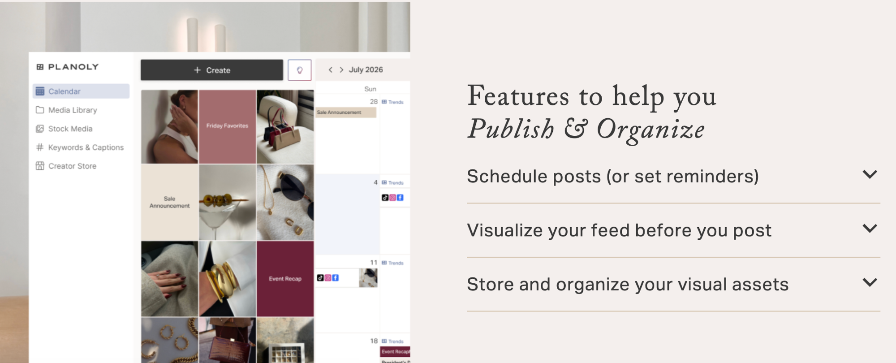

Tikomate vs Planoly: Which Is Better for TikTok Growth in 2026?
Updated June 22, 2026·7 min read
TL;DR
Planoly is a social media scheduling tool, it helps you plan, organize, and schedule posts across Instagram, TikTok, and other platforms, from $14/month.
Tikomate is a US TikTok market access system, it provides pre-verified US TikTok accounts and automation so international creators can reach 150M+ US users and unlock Creator Rewards and TikTok Shop, from $25 one-time.
They solve different problems. If you are an international creator trying to actually earn from TikTok, Tikomate unlocks the monetization. Planoly helps you organize content once your strategy is already working.
Tikomate and Planoly are both tools used by TikTok creators, but comparing them directly reveals something important: they operate at completely different layers of the creator stack. Planoly sits at the organization and scheduling layer. Tikomate sits at the market access layer. You can schedule posts all day with Planoly, but if your TikTok account is registered outside an eligible country, you will never see a Creator Rewards balance or a TikTok Shop affiliate payout. The question of which tool you need depends entirely on which problem you are actually trying to solve.
What is the main difference between Tikomate and Planoly?
Planoly helps you manage content that is going out to your existing audience. Tikomate helps you access an audience and monetization layer that your existing account cannot reach. Planoly assumes your TikTok account setup is already correct and you need organizational tools. Tikomate fixes the account setup problem that blocks international creators from the US market.
Tikomate: Provides US-registered TikTok accounts and automated posting systems that target the 150M+ US TikTok audience. One-time pricing. Unlocks Creator Rewards Program and TikTok Shop Affiliate for international creators.
Planoly: Social media calendar and scheduling platform. Helps creators and social media managers plan content across Instagram, TikTok, Facebook, and Pinterest. Monthly subscription pricing from $14/month.
$168
minimum annual cost for Planoly's Starter plan ($14/month × 12). Tikomate's US TikTok Account is $25 one-time with no recurring fees. Both tools serve different purposes, but for an international creator whose first priority is TikTok monetization access, Tikomate's one-time pricing is the lower-friction entry point.
Source: Planoly pricing page and Tikomate pricing page, June 2026

Planoly, social media content calendar and scheduling platform for multi-platform content management.
Go Deeper: Side-by-Side Breakdown
1. What problem does each tool actually solve?
The first thing to establish when comparing Tikomate and Planoly is the layer of the problem each one addresses. Planoly is a workflow tool, it makes the process of creating, scheduling, and distributing social media content more organized and efficient. It does not change what TikTok shows your content to, who can monetize it, or what features are available on your account. It is a productivity tool for content that is already working.
Tikomate is an access tool. International creators who want to participate in the US TikTok economy, the Creator Rewards Program and TikTok Shop Affiliate, both of which pay far more than most non-US alternatives, need a US-registered TikTok account. Tikomate provides that account with the full US infrastructure already built in. No SIM card, no VPN, no burner phone. The account arrives ready to use, registered correctly from the start.
2. Scheduling and automation: workflow tools vs. growth infrastructure
Planoly's core feature set is built around a visual content calendar. You can batch-schedule posts, visualize how your Instagram feed will look before posting, manage a media library of visual assets, and automate replies and DMs on Instagram. For social media managers running multiple client accounts or brands posting to five platforms simultaneously, Planoly reduces operational overhead significantly.
Tikomate's automation operates at a different level. Rather than scheduling post times, Tikomate's system automates the account warm-up behavior that signals US-location compliance to TikTok's algorithm, natural US-behavior patterns that prevent shadowbans and keep a US-registered account operating as intended when it is being used from outside the US. This is the infrastructure problem that scheduling tools like Planoly cannot touch.
3. Pricing model: monthly subscription vs. one-time payment
Planoly charges a monthly subscription: Starter at $14/month (1 Social Set, 60 uploads/month, 1 user), Growth at $24/month (2 Social Sets, unlimited uploads), and Pro at $47/month (6 Social Sets, 6 users). The annual cost compounds, at $14/month, you spend $168/year minimum just for the entry tier.
Tikomate uses one-time pricing with no monthly fees. The US TikTok Account is $25 once. The Posting Guide (how to post and reach US audiences) is $29 once. The full Domination Guide (multi-account system, automation, TikTok Shop, Creator Rewards setup) is $79 once. There is no recurring charge, you pay once and the access is yours.
How do Tikomate and Planoly compare on specs?
Feature
Tikomate
Planoly
Primary function
US TikTok market access & automation
Multi-platform social media scheduling
TikTok monetization unlock
Yes, Creator Rewards + TikTok Shop
No, cannot change account eligibility
Pricing model
One-time ($25–$79)
Monthly subscription ($14–$47/mo)
Platforms supported
TikTok (US market specifically)
Instagram, TikTok, Facebook, Pinterest
US SIM card required
No, built into the account
N/A
Content calendar/scheduling
Via automation system
Yes, visual calendar, batch scheduling
Best for
International creators targeting US TikTok income
Multi-platform social media managers and teams
How does pricing compare between Tikomate and Planoly?
Tikomate
US TikTok Account$25
One-time. Fully set up US TikTok account with Creator Rewards and TikTok Shop eligibility. Full ownership, no SIM card required.
Posting Guide$29
One-time. How to post and reach US audiences without VPNs, SIM cards, or proxies. Includes 50+ tool database.
Domination Guide$79
One-time (discounted from $99). Complete system: multi-account setup, automated warm-up, US scaling, Creator Rewards + TikTok Shop setup.
Planoly
Starter$14/mo
1 Social Set, 60 uploads/month, 1 user, free link in bio, DM automation.
Growth$24/mo
2 Social Sets, unlimited uploads, 2 users. +$10/mo per additional social set.
Pro$47/mo
6 Social Sets, unlimited uploads, 6 users. Best for agencies and multi-client management.
"I was using Buffer and Planoly to schedule my TikTok posts but earning nothing because my account wasn't eligible for Creator Rewards. I got a US account from Tikomate and within two months I was earning from both Creator Rewards and TikTok Shop affiliate sales. Scheduling tools are useful once you're actually making money, Tikomate got me to that point."
Ananya T. · TikTok Creator, India
→
Which Layer Matters First
Content scheduling tools like Planoly are valuable once your TikTok strategy is producing results. But for international creators whose account is locked out of US monetization, the access problem is more urgent than the organization problem. Solve account eligibility with Tikomate first, then layer in scheduling tools if your content volume demands it.
Which should you choose: Tikomate or Planoly?
Choose Tikomate if…
You are outside the US and want to access Creator Rewards Program
You want to join TikTok Shop Affiliate and earn commissions on US products
You want to reach the 150M+ US TikTok audience from anywhere in the world
You want one-time pricing with no monthly subscription
Your current TikTok account is registered in a non-eligible country
What is the main difference between Tikomate and Planoly?
Tikomate solves a market access problem, it gives international creators US-registered TikTok accounts so they can access Creator Rewards and TikTok Shop. Planoly solves a workflow organization problem, it helps creators and teams schedule and manage social media content across multiple platforms. The two tools operate at different layers of the creator stack and are not direct substitutes for each other.
Can Planoly help me monetize TikTok as a creator outside the US?
No. Planoly can schedule and organize your TikTok content, but it cannot change your account's country registration or unlock US-only features. Creator Rewards Program and TikTok Shop Affiliate both require a US-registered TikTok account. Tikomate provides that account for $25 one-time, no VPN or SIM card required.
Is Planoly worth it for TikTok?
Planoly is most valuable for creators and social media managers who are posting across multiple platforms and need a centralized calendar to organize content. For TikTok-first creators who only need basic scheduling, TikTok's native scheduler (free, built into the app) handles most needs. Planoly's strongest value proposition is multi-platform management, not TikTok-specific growth.
Does Planoly support TikTok auto-posting?
Yes, Planoly supports scheduling posts to TikTok and can auto-post on your behalf. It also supports reminder-based posting for content types TikTok's API does not allow auto-posting for. Planoly's TikTok scheduling is functional for teams that want content organized in a centralized calendar alongside their Instagram and other social channels.
How much does Tikomate cost compared to Planoly?
Tikomate uses one-time pricing: US TikTok Account ($25), Posting Guide ($29), Domination Guide ($79). No monthly fees. Planoly charges monthly: Starter ($14/month), Growth ($24/month), Pro ($47/month). On an annual basis, Tikomate's all-in cost ($133 for all three guides) is comparable to less than 3 months of Planoly's Pro plan.
Unlock US TikTok income from anywhere in the world.
Tikomate provides a pre-verified US TikTok account with immediate Creator Rewards and TikTok Shop access. $25 one-time. No SIM card, no VPN, no monthly fees.